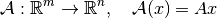
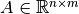
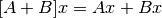
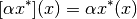
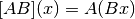

Operators¶
Operators in ODL are represented by the abstract Operator
class. As an abstract class, it cannot be used directly but must be
subclassed for concrete implementation. To define your own operator,
you start by writing:
class MyOperator(odl.Operator):
...
Operator has a couple of abstract methods which need to
be explicitly overridden by any subclass, namely
domain:SetSet of elements to which the operator can be applied
rangeSetSet in which the operator takes values
As a simple example, you can implement the matrix multiplication operator

for a matrix  as follows:
class MatrixOperator(odl.Operator):
def __init__(self, matrix):
self.matrix = matrix
dom = odl.rn(matrix.shape[1])
ran = odl.rn(matrix.shape[0])
super(MatrixOperator, self).__init__(dom, ran)
In addition, an Operator needs at least one way of
evaluation, in-place or out-of-place.
In place evaluation¶
In-place evaluation means that the operator is evaluated on a
Operator.domain element, and the result is written to an
already existing Operator.range element. To implement
this behavior, create the (private) Operator._call
method with the following signature, here given for the above
example:
class MatrixOperator(odl.Operator):
...
def _call(self, x, out):
self.matrix.dot(x, out=out.asarray())
In-place evaluation is usually more efficient and should be used whenever possible.
Out-of-place evaluation¶
Out-of-place evaluation means that the operator is evaluated on a domain element, and
the result is written to a newly allocated range element. To implement this
behavior, use the following signature for Operator._call (again given for the above example):
class MatrixOperator(odl.Operator):
...
def _call(self, x):
return self.matrix.dot(x)
Out-of-place evaluation is usually less efficient since it requires allocation of an array and a full copy and should be generally avoided.
Important: Do not call these methods directly. Use the call pattern
operator(x) or operator(x, out=y), e.g.:
matrix = np.array([[1, 0],
[0, 1],
[1, 1]])
operator = MatrixOperator(matrix)
x = odl.rn(2).one()
y = odl.rn(3).element()
# Out-of-place evaluation
y = operator(x)
# In-place evaluation
operator(x, out=y)
This public calling interface is (duck-)type-checked, so the private methods can safely assume that their input data is of the operator domain element type.
Operator arithmetic¶
It is common in applications to perform arithmetic with operators, for example the addition of matrices

or multiplication of a functional by a scalar

Another example is matrix multiplication, which corresponds to operator composition

All available operator arithmetic is shown below. A, B represent arbitrary Operator’s,
f is an Operator whose Operator.range is a Field (sometimes called a functional), and
a is a scalar.
Code |
Meaning |
Class |
|---|---|---|
|
|
|
|
|
|
|
|
|
|
|
|
|
|
|
|
|
|
|
|
|
not available |
|
There are also a few derived expressions using the above:
Code |
Meaning |
|---|---|
|
|
|
|
|
|
|
|
|
|
|
|
Except for composition, operator arithmetic is generally only defined when Operator.domain and
Operator.range are either instances of LinearSpace or Field.